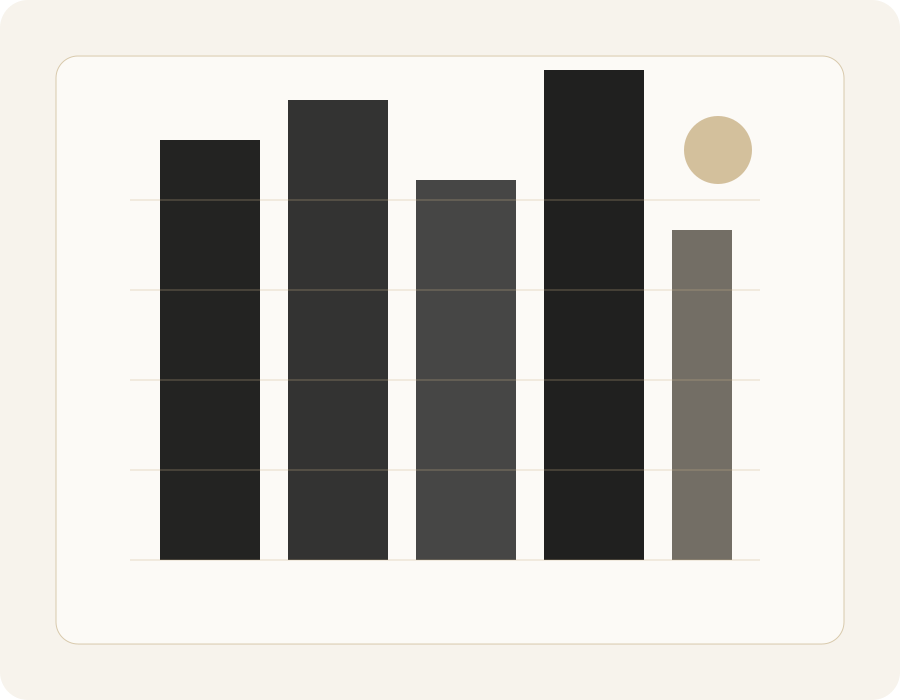
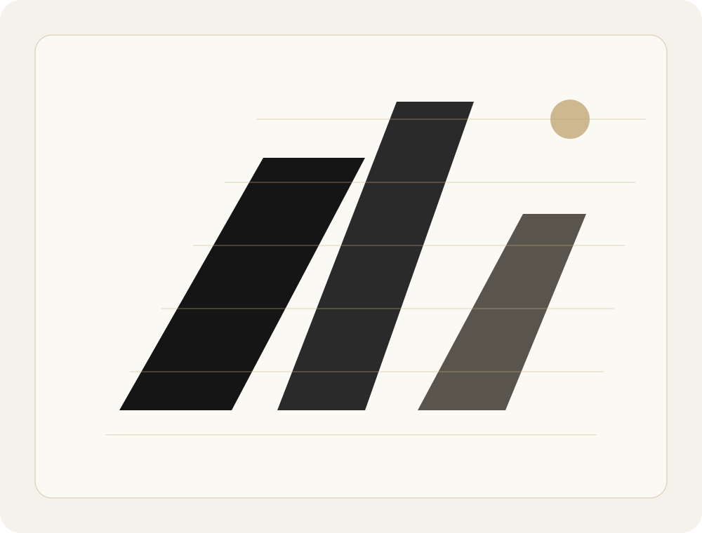

Engineering leadership
Interim Head of Engineering, Engineering Manager of Director of Development. Teams versterken, focus aanbrengen en eigenaarschap organiseren.
Onafhankelijke consultancy
Henk van der Weele helpt organisaties met interim leiderschap van softwareteams, productontwikkeling en betrouwbare software delivery. Als onafhankelijk consultant via SolutionXL BV brengt hij richting, samenwerking en resultaat in complexe IT-omgevingen, met ervaring in banking, verzekeringen, luchtvaart, energie, mobiliteit en de publieke sector.

Over SolutionXL
SolutionXL BV is de onafhankelijke consultancypraktijk van Henk van der Weele. Vanuit deze praktijk ondersteunt hij organisaties die behoefte hebben aan ervaren tijdelijke versterking in omgevingen waar belangen groot zijn en afhankelijkheden complex. Met overzicht, bestuurlijke sensitiviteit en resultaatgericht handelen brengt SolutionXL richting, voortgang en bestuurbaarheid.
De inzet is steeds gericht op tastbaar effect: betere regie, scherpere prioriteiten, heldere besluitvorming en meer grip op realisatie.

Een heldere aanpak, zonder overdaad. Gericht op waar ervaring en precisie direct waarde toevoegen.
Diensten
Interim Head of Engineering, Engineering Manager of Director of Development. Teams versterken, focus aanbrengen en eigenaarschap organiseren.
Sturing op softwareontwikkeling, releases, kwaliteit en samenwerking tussen teams en stakeholders, van prioriteit tot oplevering.
Organisaties helpen bij verandering van werkwijze, teamstructuur en delivery-capaciteit, met aandacht voor mensen én resultaten.
Senior Product Lead of Product Owner voor duidelijke productkeuzes, een uitvoerbare roadmap en betere samenwerking tussen business en development.

Aanpak
SolutionXL combineert strategisch inzicht met praktische uitvoerbaarheid. Geen standaardmodellen, maar gerichte inzet op context, structuur, besluitvorming en realisatie. De werkwijze is rustig en scherp tegelijk: eerst ordenen, dan richten, vervolgens leveren.
Profiel & CV
Senior interim IT- en softwareleider en directeur van SolutionXL BV. Inzetbaar voor engineering management, software delivery en product leadership.
Henk van der Weele is directeur van SolutionXL BV en werkt als onafhankelijk interim IT- en softwareleider. Hij ondersteunt organisaties bij het bouwen en verbeteren van engineering teams, het aansturen van softwareontwikkeling, het versterken van productmanagement en het realiseren van IT-verandering.
Zijn ervaring is opgebouwd in sectoren waar continuïteit, betrouwbaarheid en bestuurbaarheid direct impact hebben, waaronder banking, verzekeringen, luchtvaart, energie, mobiliteit, non-profit en de publieke sector. Daarbij werkte hij onder meer voor organisaties als ABN AMRO, International Card Services, Transavia, Vattenfall, Achmea, Moves/PON Automotive, Rainforest Alliance en het Ministerie van Defensie.
Met ruime ervaring in zowel corporate als publieke omgevingen beweegt Henk zich gemakkelijk tussen strategie en uitvoering, bestuur en operatie, mens en resultaat. Zijn stijl is helder, betrokken en koersvast: hij brengt rust, overzicht en richting waar complexiteit dreigt te vertragen.
SolutionXL staat voor kwaliteit, aandacht en senioriteit. Geen traditioneel adviesbureau, maar onafhankelijke consultancy met gerichte inzet op plekken waar ervaring, bestuurlijke sensitiviteit en executiekracht direct waarde toevoegen.
Direct contact: 06-4674 1921 · agile@solutionxl.nl
Inzetvormen
SolutionXL is inzetbaar voor gerichte interventies, tijdelijke senior rollen en langduriger trajecten waarin continuïteit, bestuurbaarheid en resultaat centraal staan. Altijd als onafhankelijke consultant met directe inzetbaarheid en senior executiekracht.